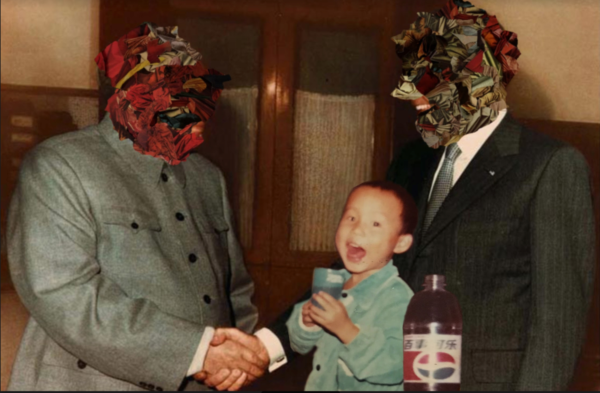

A HOME IS WHAT IS HOME
March 2018
Saturday, March 10, 2018
6:00 PM
18:00
-
Saturday, March 24, 2018
6:00 PM
18:00
A HOME IS WHAT IS HOME
6 artists exploring home life through art.
March 9 - 30th
Opening Reception (Little Berlin): Saturday, March 10th, 6-9pm A HOME IS WHAT IS HOME
Closing Reception (Artist Invitational): Saturday, March 24th, 6-9pm WELCOME HOME
When visualizing domesticity one may imagine some elements of a fleeting idea of a vision of a home in the suburbs with two kids and a dog. What is presented and explored as a theme throughout the curation of the show is all the ways that the “ideal life” does not actually exist. And yet, americans are constantly bombarded with imagery, fashion and merchandise that rely on a heteronormative ideal. The goal of this show is to blend schema that relate to each artists experience of domesticity with elements of abstraction to create new associations with how we explore and celebrate our lives.
The artists in A HOME IS WHAT IS HOME showcase artwork that reinvents the schema prevalent in ads, interior design and fashion to create a curated space that represents some of the ways that life and the things we live with are all different, and therefore beautiful. In the way which there are multiple forms of artwork representing multiple viewpoints, the curatorial goal is to create a space in which the guests leave the show with new ways of viewing their own lives and those of others.
